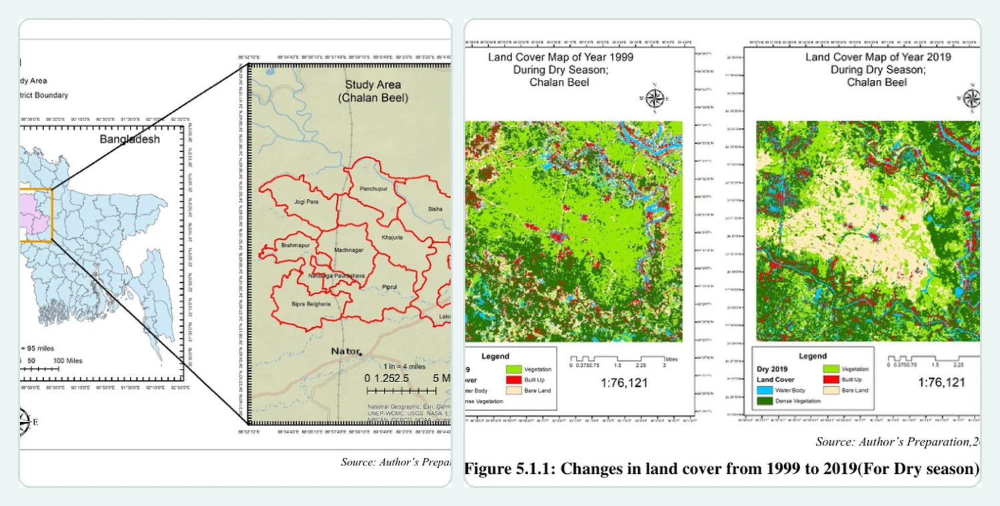
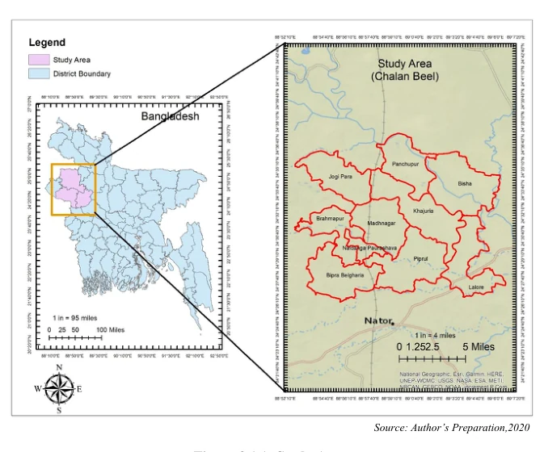
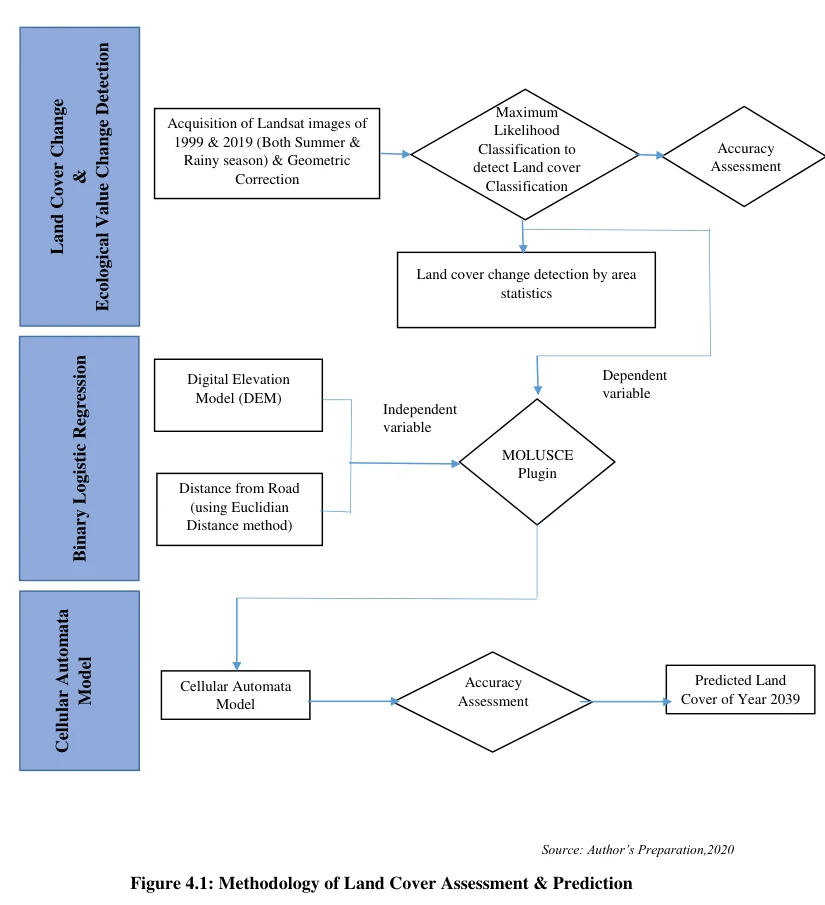
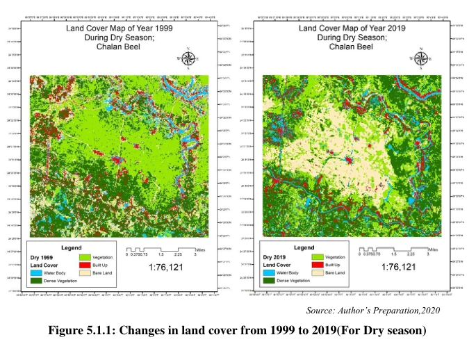
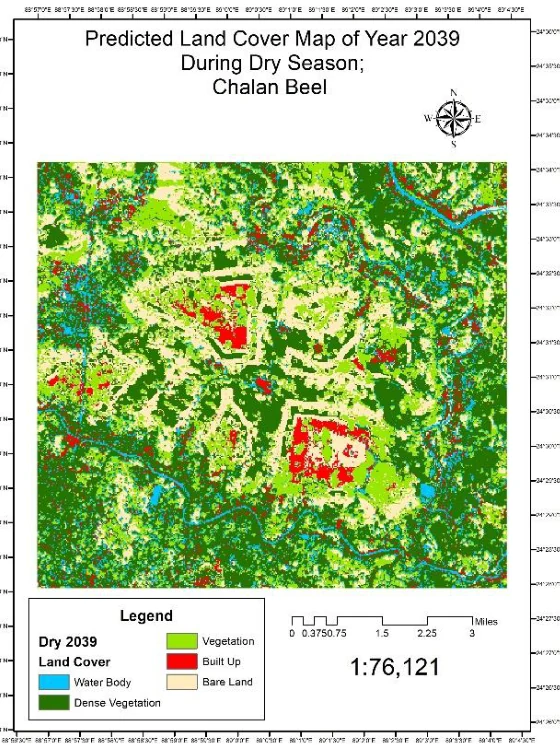
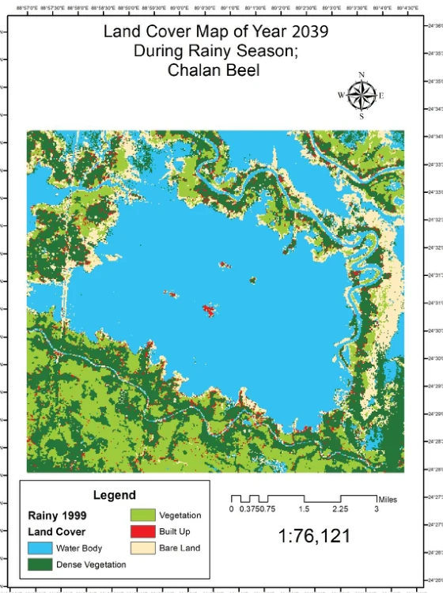
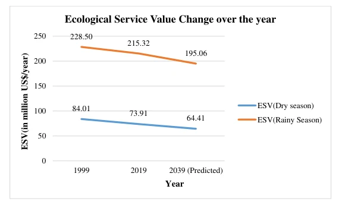

Prediction of Land Cover Change Pattern and Economic Valuation of Environmental Change: The Case of Natural Wetland, Chalan Beel, Bangladesh
Assesses long-term land-cover change, future wetland scenarios, environmental valuation and conservation priorities in Chalan Beel.
- Research focus
- Explain wetland transformation and translate spatial evidence into planning and conservation implications.
- Methods & data
- Multi-date satellite imagery · CA–Markov modelling · aerosol analysis · ecosystem-service valuation · field-based perception data.
- Current stage
- Completed · Bachelor of Urban & Regional Planning thesis, 2020.

Research rationale and study context
Abstract
This undergraduate thesis investigated environmental change in Chalan Beel through an integrated framework combining seasonal land-cover mapping, spatial scenario modelling, satellite-derived aerosol indicators, ecosystem-service valuation, and community willingness-to-pay analysis. Multispectral Landsat imagery from 1999 and 2019 was classified for dry and rainy seasons, and a Cellular Automata–Markov approach was used to develop land-cover scenarios for 2039 using elevation and distance from major roads as spatial drivers. TOMS and Sentinel-5P TROPOMI aerosol data were examined for 1999, 2019, and 2020. The results indicated expansion of bare and built-up land, loss of vegetation and seasonal water coverage, and a continuing decline in ecosystem-service value. The work demonstrates how remote sensing, GIS, environmental economics, and field-based socioeconomic analysis can be combined to support wetland conservation and planning.
1. Research problem and objectives
Evaluating wetland change beyond land-cover maps
The study addressed the need to understand not only how the wetland landscape had changed, but also how the observed spatial transformation related to air-quality indicators, future land-cover patterns, ecological-service losses, and public willingness to support conservation.
Analyse changes in seasonal land-cover patterns and aerosol-index conditions and develop a future land-cover scenario for Chalan Beel.
Assess the economic implications of environmental change through ecosystem-service valuation and willingness-to-pay analysis.
2. Study area
Chalan Beel, north-central Bangladesh
The mapped study area covered approximately 143.3 km² across parts of Natore, Naogaon, and Rajshahi districts. Because Chalan Beel is seasonally inundated, the research treated dry- and rainy-season land-cover conditions separately rather than representing the wetland through a single annual map.

Methods, results and valuation
3. Data and methods
Integrated geospatial and environmental-economic assessment
| Component | Data / method | Purpose |
|---|---|---|
| Land-cover mapping | Landsat 5 TM and Landsat 8 OLI; 1999 and 2019; dry and rainy seasons; maximum-likelihood classification | Map water body, dense vegetation, vegetation, built-up land, and bare land |
| Accuracy assessment | Reference observations interpreted from Google Earth imagery; overall, user, producer, and kappa measures | Evaluate reliability of classified maps |
| Scenario modelling | Cellular Automata–Markov modelling in MOLUSCE; DEM and distance from major roads as spatial drivers | Develop dry- and rainy-season land-cover scenarios for 2039 |
| Aerosol analysis | Earth Probe TOMS and Sentinel-5P TROPOMI aerosol-index data processed from NetCDF using Python | Compare aerosol conditions for 1999, 2019, and 2020 |
| Ecosystem valuation | Land-cover area multiplied by corresponding ecosystem-service value coefficients | Estimate changes in annual ecosystem-service value |
| Socioeconomic analysis | Stratified household survey, choice experiment, and random-parameter logit models | Assess factors associated with willingness to pay for wetland conservation |

4. Selected results
Observed change and 2039 land-cover scenarios
The 1999 and 2019 classifications reported overall accuracies of 87.4% and 92.01%, respectively. The most substantial dry-season change was the expansion of bare land, while the rainy-season analysis showed a marked decline in water coverage.
| Indicator | 1999 | 2019 | Change |
|---|---|---|---|
| Dry-season bare land | 12.69% | 21.58% | +8.89 percentage points |
| Dry-season vegetation | 36.75% | 29.05% | −7.71 percentage points |
| Rainy-season water body | 55.47% | 51.03% | −4.44 percentage points |
| Rainy-season built-up land | 1.05% | 1.84% | +0.80 percentage points |

Scenario validation and projected composition
The thesis reported correctness values of 87.06% for the dry-season scenario and 92.04% for the rainy-season scenario, with kappa values of 0.84 and 0.88. Under the 2039 dry-season scenario, built-up land reached 9.01% and bare land 28.34%. In the rainy-season scenario, water coverage declined to 45.76%, while bare land increased to 11.14%.


5. Environmental and economic interpretation
From spatial change to conservation value
Aerosol-index comparisons suggested poorer conditions in 2019 than in 1999 and 2020. The study interpreted the lower 2020 values in the context of reduced economic activity during the COVID-19 lockdown. The ecosystem-service assessment showed declining values in both seasonal contexts.
| Ecosystem-service value | 1999 | 2019 | 2039 scenario |
|---|---|---|---|
| Dry season | US$84.01 million/year | US$73.91 million/year | US$64.40 million/year |
| Rainy season | US$228.50 million/year | US$215.32 million/year | US$195.06 million/year |
The thesis estimated a total rainy-season ecosystem-service loss of approximately US$33.44 million between 1999 and the 2039 scenario. The estimated annual willingness to pay was substantially lower than the assessed ecosystem-service loss, highlighting the financial gap between public contributions and the scale of ecological degradation.

Significance, contribution and limitations
6. Research significance
Relevance to environmental planning and later research
The study demonstrated an interdisciplinary workflow in which Earth-observation evidence was connected with spatial prediction, atmospheric indicators, economic valuation, and field-based socioeconomic data. For planning practice, the results provided a structured basis for discussing wetland conservation, ecological-service loss, land-use control, and long-term environmental monitoring.
As an undergraduate research project, it also established an early foundation for my subsequent work in GIS, remote sensing, spatial modelling, environmental analysis, and GeoAI-oriented research.
7. Authorship and research record
Transparent presentation of contribution
8. Limitations
Scope of interpretation
- The analysis used 30 m Landsat imagery and scenes with less than 10% cloud cover rather than fully cloud-free observations.
- The Cellular Automata approach represents land transitions through neighbourhood effects and selected spatial drivers; the 2039 outputs should be interpreted as modelled scenarios, not deterministic forecasts.
- The air-quality component focused on aerosol index and did not examine the full range of atmospheric pollutants.
- The field survey was completed within a limited data-collection period and could be strengthened through broader sampling and longitudinal validation.